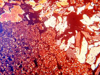
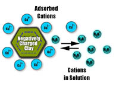

What is Soil?
Soil and Environment
Soil Physics
Soil Chemistry
Living Soil
Soil Fertility
Soil Management

| In Saskatchewan, agriculture land covers about 40% of the province.
Most of the soils have developed over the ten thousand years since
the last glaciers retreated. But it is only in the last hundred years
or so that these soils have been cultivated by man.
Early settlers were given custody of some of the most fertile grassland soils in the world. In a century of soil management, our record has not been good. From the devastation of the "dirty thirties" through the overuse of summerfallow and monocropping to modern day pollution problems with fertilizers and pesticides, we seem intent on abusing one of the most valuable natural resources we have. |
|
What is a Soil?
 Why is soil important? What is it made of? Learn how we study soil through the traditional sciences of physics, chemistry and biology, but with a practical emphasis. The thin section of soil parent material under the polarized microscope shows the many soil minerals and pore space.
Soil and Environment
Soil is a product of the environment. Discover the factors and processes of soil formation. Find out why glaciation was important in creating our productive soils. Why are there soil zones and how many are there in Saskatchewan? How and why is soil classified?

Soil is a three phase system composed of solids, liquids and gases. The study of the physical behavior of these phases is called Soil Physics. Find out how soils are built - their density, porosity, structure and texture. How do we measure soil colour and why is it important? How does our understanding of soil physics enable us to learn more about erosion and the ability of plants to extract water and nutrients? |
|
Soil Chemistry
 Soil chemistry is dominated by the behavior of the tiny colloidal particles made up of clays and organic matter. Find out why cation exchange is vital to our understanding of all the soil sciences.
Living Soil
Can we have a soil without living organisms? Which organisms are beneficial and which are detrimental to agriculture? Discover the multitude of microscopic and macroscopic lifeforms - how they live together and what they do. Enter the fascinating world of Soil Biology.
Soil Fertility Seventeen major elements are required for plant growth; three come from the atmosphere and the rest must be supplied by the soil. Find out how plants pick up nutrients and how we can produce bigger and better crops through modern fertilization and management techniques.
Soil Management
Compare historical soil management practices to those of today. What happened in the "dirty thirties"? What are some of the main problems affecting soils in Saskatchewan? How do we use modern technology and knowledge to manage problem soils and preserve fertility for future generations?
|